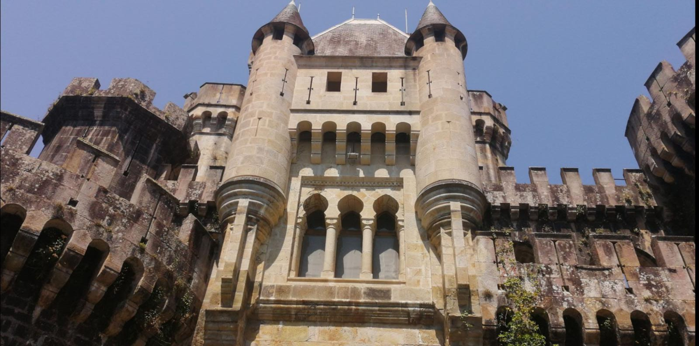
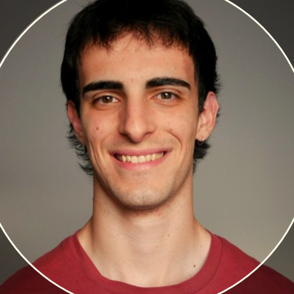

About
I'm Josu Bayer, a physicist and electronic engineer from Bizkaia. I did a double degree at UPV/EHU and then a master's in AI and language technology. I also organise things. I co-directed ENEF 2025, a national congress for 200 physics students, and raised more than €80,000 for it. The apps below are ones I built and use.

Work
Rows marked with an arrow open the code on GitHub.
- Index-fund studyNegative-result study2026Nothing beat buy-and-hold MSCI World. Holdout locked, result reported as it came out.
- Ascension SystemWeb app2026A habit tracker where daily routines level up an avatar.
- SutelagunWeb app2026Recipes that remember every attempt and what changed between them.
- ZerrendaWeb app2026Shopping lists shared live and generated from the recipe app.
- Poltsiko BegieWeb app2026An expense tracker with two ledgers and shared-cost splitting.
- Begi LuzeWeb app2026An investment tracker with FIFO cost basis across platforms and a tax table for the annual return.
- Mus TrackerWeb app2026A tournament log and statistics for the Basque card game mus.
- EgutegieWeb app2026A personal calendar with rolling cycles and email reminders.
- EntzungelaWeb app and tool2026Turns a book PDF into Spanish audio chapters and plays them offline on a phone.

Background
Studies
MSc in AI and Language TechnologyMaster'sUPV/EHU, Donostia2025–27
Physics and Electronic EngineeringDouble degreeUPV/EHU, Leioa2020–26
Talentia SkillsProgrammeBasque Government2021–24
PMI KickoffCoursePMI2026
Research
Language technologyResearch grantIXA group, UPV/EHU2025–26
BallistocardiographyInternshipBioRes group, UPV/EHU2024–26
Physics-informed networksInternshipBCAM, Bilbao2024
Rocket simulationTeam memberBisky Team, UPV/EHU2023–24
Teaching and mentoring
Physics and mathsPrivate tutorBilbao2022–
First-year studentsPeer tutorUPV/EHU2022–23
Talentia SkillsMentorBizkaia Talent2023–24
Physics OlympiadOrganiser, trainerEuskadi2024–25

Contact
Bizkaia, Basque Country
bayer.josu@gmail.com
LinkedIn
GitHub, josu-bayer
CV, one page
Hello
